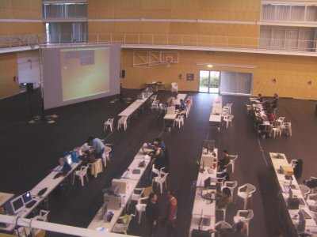
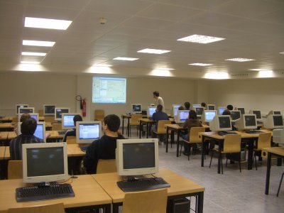
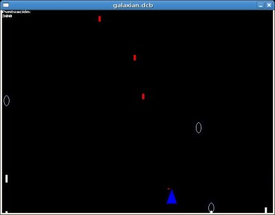
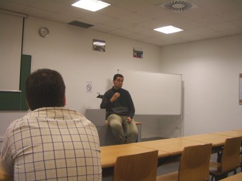
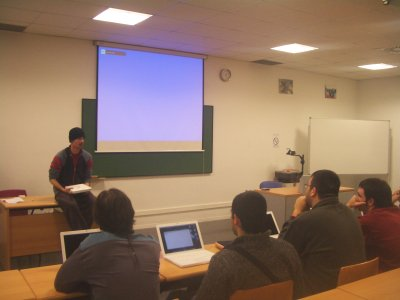
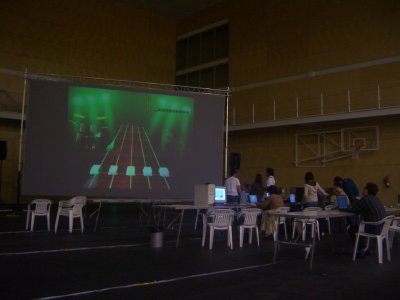
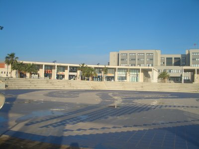
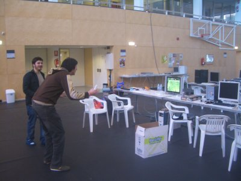

{kind=link}
 This work is licensed
under a Creative
Commons Attribution-ShareAlike 2.5 Spain License
This work is licensed
under a Creative
Commons Attribution-ShareAlike 2.5 Spain License
|
"Robótica Modular Libre”. iParty 9. Universidad Jaume I. (UJI). Castellón de la Plana. Abril 2007 |
Título de la charla: “Robótica Modular Libre”
Fecha: 13 de Abril de 2007
Duración: 50 minutos
Evento: iParty 9
Organiza: ADITEL. Asociación para el Desarrollo de la Informática y la TELemática.
Persona de contacto: Gloria Martínez Vidal.
Lugar: Universidad Jaime I. Castellón de la plana
Ponente:
En esta charla se explican los principios de locomoción de varios robots modulares y se hacen demostraciones en vivo. Se enseñan los módulos Y1, que son libres, y cómo con ellos se pueden construir diferentes configuraciones de robots modulares. El hardware empleado para el control es también libre, de manera que cualquiera puede replicar los robots, modificarlos o mejorarlos.
La robótica modular es un área de investigación nueva en la que se diseñan módulos y a partir de ellos se crean robots modulares. En esta charla-demo se hace primero una introducción a la robótica modular. Después se muestran los módulos que hemos diseñado para la construcción de robots modulares. Tienen la característica de que son libres y han sido diseñados utilizando herramientas libres bajo entornos GNU/Linux. Para el control se utiliza la tarjeta Skypic, que es hardware libre.
A continuación se hacen demostraciones de los robots modulares mínimos, que son capaces de moverse en una y dos dimensiones, y se explican sus principios de locomoción. Luego se presentan dos configuraciones de tipo “gusano”. Una es Cube Revolutions, que aunque sólo se puede desplazar en línea recta, puede cambiar su forma. Se muestran vídeos de su funcionamiento. El otro es Hypercube, con el mismo tamaño que Revolutions pero que es capaz de moverse en dos dimensiones. Se hace demostraciones en vivo.
Finalmente se enseñan ejemplos de robots modulares virtuales que se mueven de diferentes maneras y que han sido obtenidos usando búsquedas con algoritmos genéticos.
El objetivo es mostrar a los asistentes que es posible hacer robótica con un presupuesto no muy alto y que está al alcance de todos. La única limitación es la imaginación
Se permite la copia, distribución y modificación de este documento siempre y cuando se siga manteniendo con la misma licencia
|
|
|
Descarga de la presentación |
|
Presentación para OpenOffice 2.0 |
|
|
Presentación en PDF |
Algunos de los vídeos que se mostraron en la presentación:
Un módulo Y1 en movimiento [Vídeo].
Conexión de dos Módulos Y1 con la misma orientación [Vídeo].
Conexión de dos módulos Y1 con diferentes orientaciones [Vídeo].
La configuración PP moviéndose hacia adelante y hacia atrás [Vídeo].
La configuración PP cuando las ondas están en fase [Vídeo].
La configuración PP cuando las ondas están en oposición de fase [Vídeo]
Configuración PYP moviéndose en línea recta [Vídeo]
Configuración PYP describiendo un arco [Vídeo]
Configuración PYP moviéndose lateralmente [Vídeo]
Configuración PYP rodando lateralmente [Vídeo]
Cube Revolutions moviéndose mediante ondas periódicas [Vídeo]
Cube Revolutions moviéndose con semi-ondas [Vídeo]
Cube Revolutions haciendo la cobra [Vídeo].
Cube Revolutions enrollándose [Vídeo].
Cube Revolutions moviéndose como una rueda [Vídeo]
Tux montando sobre Cube revolutions ;-) [Vídeo]
Friki-cube moviéndose [Vídeo]
Friki-cube haciendo la cobra [Vídeo]
Hypercube moviéndose en línea recta [Vídeo]
Hypercube describiendo un arco [Vídeo]
Hypercube moviéndose lateralmente [Vídeo]
Hypercube rotando paralelamente al suelo [Vídeo]
Hypercube rodando [Vídeo]
Hypercube con forma de cuadrado [Vídeo]
Información sobre los módulos Y1
Robot Cube Revolutions
Open Dynamics Engine (ODE): Motor físico.
Robot Skybot. Un robot para iniciarse en la robótica.
Tareta Skypic. Tarjeta libre utilizada para aplicaciones de robótica y domótica.
Artículo: “Locomotion of a Modular Worm-like Robot using a FPGA-based embedded MicroBlaze Soft-processor”, sobre Cube Revolutions (en inglés)
Artículo: “Evaluation of a locomotion algorithm for worm-like robots on FPGA-embedded processors”. Sobre Cube Revolutions. (En inglés).
Artículo: “Motion of Minimal Configurations of a Modular Robot: Sinusoidal, Lateral Rolling and Lateral Shift”. Sobre las configuraciones mínimas (en inglés).
Artículo: “Locomotion of a Modular Robot with Eight Pitch-Yaw-Connecting Modules”. Sobre Hypercube (en inglés).
La iParty 9 se celebró en el campus de la Universidad Jaume I (UJI) en Castellón de la plana. Es una party diferente a las demás. Está centrada en el software libre y linux, con muchas actividades divulgativas y de formación técnica. Como amante de linux y de las tecnologías libre, me sentí como pez en el agua allí ;-) (O tal vez debería decir como pulpo en el mar :-P )
Gloria Martínez (Servidora) se puso en contacto conmigo en febrero para invitarme a participar. Como el mundo es un pañuelo, y el mundo friki más todavía ;-), resultaba que uno de los socios de ADITEL, Emilio José Molina (Mars Attack!) me había visto en la charla “granja de Micro-robots” que habíamos hecho en la Quijote Party 2006. Le había parecido curioso la saga de robots libres “Cube” :-)
Nunca antes había estado en Castellón de la plana, ni tampoco en la UJI. En otros eventos había visto que en esta Universidad estaban apostando fuerte por el software libre y tenía muchas ganas de conocerla. Y sobre todo, tenía ganas de estar en una party dedicada exclusivamente al software libre. Así que el Jueves 12 de Abril a las 8 de la mañana estaba montado en el tren camino a Castellón, con mi portátil y mis robots.
Me vinieron a buscar a la estación Gloria e Ignacio Gil. Dejamos la maleta y nos fuimos a la iparty. El centro de “operaciones base” estaba en el pabellón Polideportivo (foto de la izquierda). Los talleres se celebraron en una de las aulas de informática de la facultad de Ciencias Humanas y Sociales.
La primera actividad a la que asistí fue el taller de Gimp, impartido por Emilio José Molina (foto de la derecha). Estuvo fenomenal. Aprendí muchísimas cosas. ¡Gracias Emilio! ;-)
|
 |
 |
A continuación fue el taller de programación de videojuegos en Fénix. Lo dió Pablo Navarro (panreyes) de PixJuegos. Asistí al taller por “curiosidad” , a ver de qué iba eso... y ¡¡me gustó muchísimo!!. Pablo nos enseño con un ejemplo muy didáctico cómo programar un juego “matamarcianos” utilizando la herramienta fénix, un compilador de un lenguaje para la programación de videojuegos, desarrollado con licencia GPL y disponible para entornos Linux y Windows.
Me emocioné tanto con el taller que no saqué ninguna foto :-( Pero aquí dejo un pantallazo de mi versión del juego de marcianitos (foto de la izquierda). Las fuentes del juego se pueden descargar desde aquí: matamarcianos.tgz. Para ejecutarlo hay que hacer los siguiente:
Descargar el Fénix (para Linux o Windows)
Compilar: fxc galaxian.prj
Ejecutar: fxi galaxian.dcb
y a jugar!!!!
Además de talleres hubo una serie de conferencias teóricas. Javier Sancho “Sanko” nos habló sobre “La realidad del DRM”, que se podría resumir muy bien con su frase “DRM es la forma con la que pocos controlan a muchos” (Foto de la derecha).
|
 |
 |
Juan Arrase dio la charla “Maquea tu Mac” (foto de la izquierda) donde enseño las “tripas” del MacOS y cómo hacer para adaptarlo a tus necesidades. Yo no tengo un Mac pero es un ordenador que me gusta por su diseño y no descarto comprarme uno en el futuro. Así que asistí a la charla para conocer un poco más en detalle cómo son :-)
Pero el auténtico espíritu de las parties está por la noche. En la foto de la derecha se puede ver a la gente jugando al Frets on Fire en una pantalla grande y con la música sonando por los altavoces para todo el pabellón. Muy friki ;-) Esa noche no me quedé mucho tiempo. Tenía mi charla al día siguiente a las 10 y quería estar fresco. Alicia Andrés (zona lunar) me acercó al hotel. ¡Muchas gracias! ;-)
|
 |
 |
Al día siguiente por la mañana llegué pronto a la Universidad, sobre las 9. Hacía un día muy bueno (foto de la izquierda). En el pabellón apenas quedaba gente, estaban todos durmiendo después de una larga noche de frikismo (qué duro es ser friki!!!). Pero todavía quedaban algunos asistentes que estaban quemando los últimos cartuchos, como los que se ven en la foto de la derecha (sorry, no sé vuestros nombres :-( ). Estaban jugando a la wii. Esta consola yo la conocía por la televisión y los vídeos de YouTube, pero nunca la había visto en vivo y en directo. Muy amablemente me invitaron a jugar con ellos a los “bolos”. ¡¡Es increible!! Me enamoré automáticamente de la Wii... pero lo que más me gustaron fueron los mandos que iban por bluetooth. Y recordé que había leído en Menéame un artículo sobre alguien que había puesto en marcha unas librerías para poder leer la información del mando... ummm eso era muy interesante. Ya tenía proyecto friki para hacer durante la noche ;-)
A las 10 fue mi charla. Sobre las 9:30 empecé a sacar los robots y prepararlo todo. Emilio Molina la grabó en vídeo. Por cierto, Emilio, gracias por dejarme tu navaja multiusos ;-) Morphy siempre está por ahí al acecho.
|
 |
 |
|
|